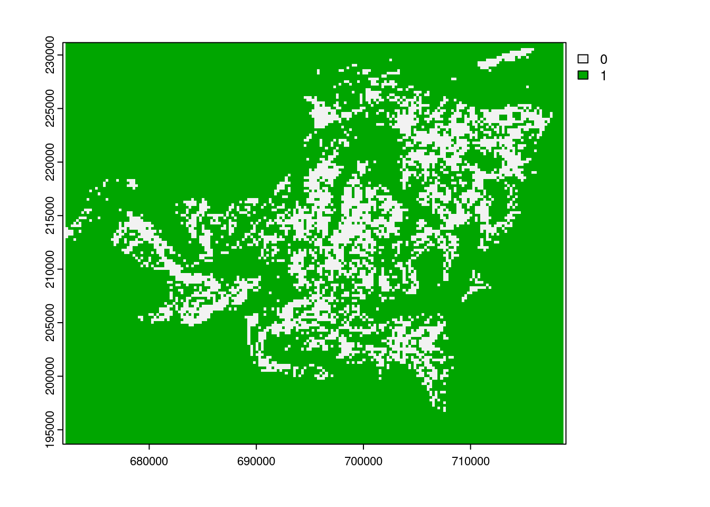
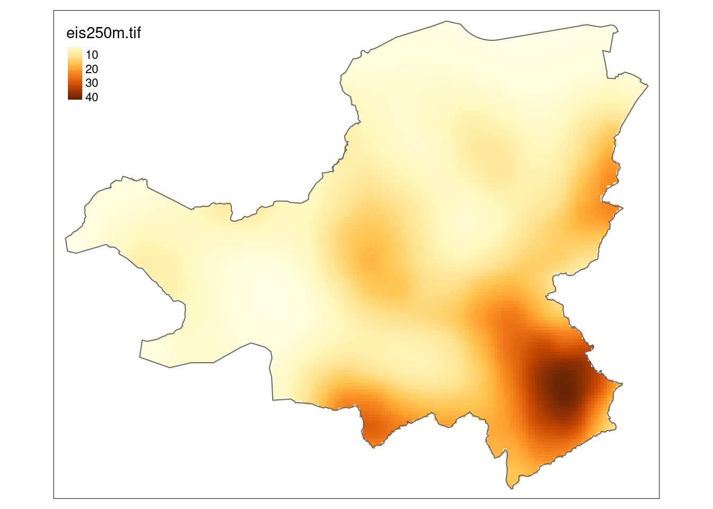
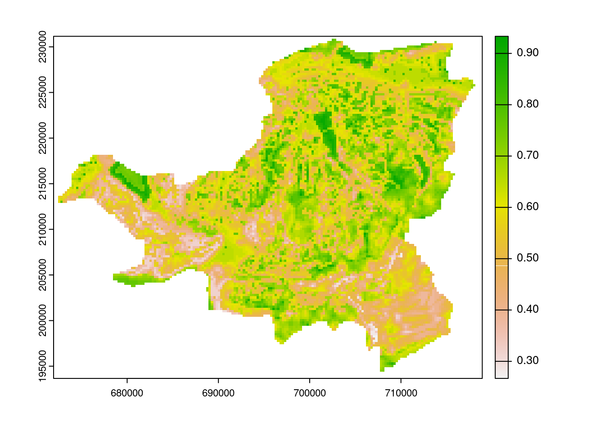
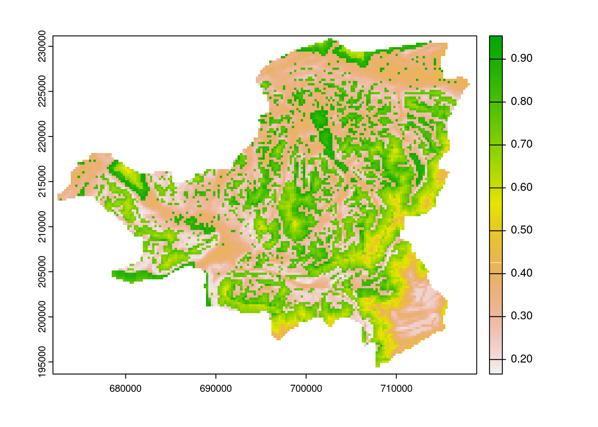

Schutzgebiete |
Waldgebiete |
Siedlungsgebiete |
Strassen |
||||
|---|---|---|---|---|---|---|---|
| Dist | Score | Dist | Score | Dist | Score | Dist | Score |
| 0-50 | 0.0 | 0-10 | 0.0 | 0-80 | 0.0 | 2500-Inf | 0.0 |
| 50-100 | 0.1 | 10-20 | 0.1 | 80-160 | 0.1 | 2250-2500 | 0.1 |
| 100-150 | 0.2 | 20-30 | 0.2 | 160-170 | 0.2 | 2000-2250 | 0.2 |
| 150-200 | 0.3 | 30-40 | 0.3 | 170-180 | 0.3 | 1750-2000 | 0.3 |
| 200-250 | 0.4 | 40-50 | 0.4 | 180-190 | 0.4 | 1500-1750 | 0.4 |
| 250-300 | 0.5 | 50-60 | 0.5 | 190-200 | 0.5 | 1250-1500 | 0.5 |
| 300-350 | 0.6 | 60-70 | 0.6 | 200-210 | 0.6 | 1000-1250 | 0.6 |
| 350-400 | 0.7 | 70-80 | 0.7 | 210-220 | 0.7 | 750-1000 | 0.7 |
| 400-450 | 0.8 | 80-90 | 0.8 | 220-230 | 0.8 | 500-750 | 0.8 |
| 450-500 | 0.9 | 90-100 | 0.9 | 230-240 | 0.9 | 250-500 | 0.9 |
| 500-Inf | 1.0 | 100-Inf | 1.0 | 240-Inf | 1.0 | 0-250 | 1.0 |
Rauman 5: Übung
In der folgenden Übung möchten wir potentielle Standorte für Windkraftanlagen im Kanton Schwyz ermitteln. Zu diesem Zweck führen wir eine Multikriterien-Evaluation durch. Diese besteht im Wesentlichen aus zwei Teilen:
- Ausschlussgebiete
- Potenzialflächen
Als Auschlussgebiete gelten Flächen, wo keine Windkraftanlagen gebaut werden können. Dazu gehören bewohnte Flächen, nationale Schutzgebiete, Waldgebiete und Seen. Um diese Gebiete zu ermitteln müssen die entsprechenden Datensätze zusammengeführt und vom Resultat der Potentialflächen ausgeschlossen werden.
Als Potentialflächen gelten gebiete mit hoher Eigung. Eine Gebiet ist umsobesser geeignet:
- Je weiter weg es sich von bewohnte Flächen, Nationale Schutzgebieten und Waldgebieten befindet
- Je näher es sich zu einer Strasse befindet
- Je höher die Windgeschwindigkeit ist
- Je geringer die Vereisungshäufigkeit ist
- Je geringer die Hangneigung ist
Die Eignungsbewertung aufgrund der Distanzen (Punkt 1 & 2 in der obigen Aufzähung) könnt ihr aus der folgenden Tabelle entnehmen:
Die Bewerungen für die Punkte 3, 4 und 5 (Windgeschwindigkeit, Vereisungshäufigkeit und Hangneigung) sind wie folgt:
Windgeschwindigkeit |
Vereisungshaeufigkeit |
Hangneigung |
|||
|---|---|---|---|---|---|
| Speed | Score | Days | Score | Slope | Score |
| 0-35 | 0.0 | 60-365 | 0.0 | 20-90 | 0.0 |
| 35-40 | 0.1 | 54-60 | 0.1 | 18-20 | 0.1 |
| 40-45 | 0.2 | 48-54 | 0.2 | 16-18 | 0.2 |
| 45-50 | 0.3 | 42-48 | 0.3 | 14-16 | 0.3 |
| 50-55 | 0.4 | 36-42 | 0.4 | 12-14 | 0.4 |
| 55-60 | 0.5 | 30-36 | 0.5 | 10-12 | 0.5 |
| 60-65 | 0.6 | 24-30 | 0.6 | 8-10 | 0.6 |
| 65-70 | 0.7 | 18-24 | 0.7 | 6-8 | 0.7 |
| 70-75 | 0.8 | 12-18 | 0.8 | 4-6 | 0.8 |
| 75-80 | 0.9 | 6-12 | 0.9 | 2-4 | 0.9 |
| 80-Inf | 1.0 | 0-6 | 1.0 | 0-250 | 1.0 |
Übungen 1: Vektor Daten laden und anzeigen
Laden Sie das File windkraft_geodata.gpkg von Moodle herunter. Dieses beinhaltet alle Vektordaten, die für die Bearbeitung der Multikriterien-Evaluation benötigt wird (Bewohnte Flächen, Nationale Schutzgebiete, Seeflächen, Strassen, Waldgebiete sowie die Kantonsgrenze von Schwyz).
Explorieren Sie die Daten visuell und versuchen Sie ein Verständnis für die Datensätze zu bekommen. Zur Visualisierung können Sie die Funktionen plot oder die Packages tmap oder ggplot2 verwenden.
Wir werden die folgenden Pakete in dieser Übung verwenden:
library(sf)
library(terra)
library(dplyr)
library(tmap)Übung 2: Entfernungen zu Kriterien berechnen
Beginnen wir mit den Enfernungskriterien. Bei der Bewertung geeigneter Standorte für Windkraftanlagen ist die Entfernung zu Waldgebieten, nationalen Schutzgebieten, bewohnten Gebieten und Strassen relevant. Mit Ausnahme von Strassen gilt: je weiter weg desto besser, das ist aber an dieser Stelle noch nicht relevant.
Starten wir mit der Distanz zum Wald. Es geht nun darum für den Punkt im Raum zu wissen, wie weit weg der nächstgelegene Wald ist. Dazu müssen wir den Vektordatensatz zuerst in Raster konvertieren. Und dies geht folgendermassen:
- Erstelle eine Raster “Template”
template <- rast(ext(kt_schwyz), resolution = c(250, 250), crs = "EPSG:21781")- Vektorisiere den Wald mit der Funktion
rasterize()undvect(), basierend auf dem Template. Alle Wald Zellen sollen den Wert 1 erhalten (field = 1)
wald_r <- rasterize(vect(wald), template, field = 1) - Berechne die Distanz mit der Funktion
distance()
wald_dist <- distance(wald_r)
plot(wald_dist)
Versuche die drei Schritte mit den anderen drei Datensätzen durchzuführen. Für Profis: Erstelle dazu eine Funktion.
Übung 3: Distanzkriterien Bewerten
Jetzt wo wir die Distanzen berechnet haben können wir diese gemäss Tabelle 57.1 bewerten. Hierfür brauchen wir die Function classify(). Wie wir aus der Dokumentation der Funktion (mit ?classify) entnehmen können, müssen wir die Distanzbewerungen in einer Matrix mit 3 Spalten festhalten. Die ersten beiden Spalten stellen die “von” und “bis” Werte dar, die 3 Spalte den neuen Wert.
wald_reclass_matrix <- matrix(c(
0,10,0,
10,20,0.1,
20,30,0.2,
30,40,0.3,
40,50,0.4,
50,60,0.5,
60,70,0.6,
70,80,0.7,
80,90,0.8,
90,100,0.9,
100,Inf,1.0), ncol = 3, byrow = TRUE)
wald_reclass_matrix [,1] [,2] [,3]
[1,] 0 10 0.0
[2,] 10 20 0.1
[3,] 20 30 0.2
[4,] 30 40 0.3
[5,] 40 50 0.4
[6,] 50 60 0.5
[7,] 60 70 0.6
[8,] 70 80 0.7
[9,] 80 90 0.8
[10,] 90 100 0.9
[11,] 100 Inf 1.0wald_classify <- classify(wald_dist, wald_reclass_matrix)
plot(wald_classify)
Übung 4: Rasterdaten einlesen
Zur Bewertung der Standorte Hinsichtlich Windgeschwindigkeit und Vereisungshäufigkeit stehen uns Rasterdatensätze zur Verfügung. Lade die beiden nachfolgenden Datensätze herunter und mit der Funktion rast() in R ein.
- eis250m.tif (Vereisungshäufigkeit in Tage/Jahr)
- wind250m.tif (Durchschnittliche Windgeschwindigkeit)
Explorieren Sie die Daten visuell und versuchen Sie ein verständnis für die Datensätze zu bekommen. Zur Visualisierung können Sie die Funktionen plot oder tmap verwenden.

Übung 5: Windgeschwindigkeit und Vereisungshäufigkeit bewerten
Die beiden Rasterdatensätze eis250m.tif und wind250m.tif. können wir direkt mit classify() gemäss Tabelle 57.2 bewerten. Versuche dies analog der Bewertung der Distanzwerte.
Übung 6: Neigung berechnen und Bewerten
Für die Berechnung und anschilessende Bewertung der Hangneigung brauchen wir ein Höhenmodell. Lade folgendes Höhenmodell herunter und in R ein, und berechne Anschliessend die Hangneigung mit der Funktion terrain() (beachten Sie die Einheit des Output!). Bewerten Sie die Hangneigung danach gemäss Tabelle Tabelle 57.2.
- dhm250m.tif (Höhenmodell)
Übung 7: Gewichtetes Overlay
Nun können wir sämtliche Bewertungen zusammenfliessen lassen. Dazu gibt es eine Vielzahl von Möglichkeiten. Wir können alle Kriterien addieren und dann durch die Anzahl Kriterien dividieren, um so einen Mittelwert zu erhalten.
# TODO: KÖNNEN WIR DIESEN HACK VERMEIDEN?
crs(siedlungsgebiet_reclass) <- crs(neigung_relass)
crs(schutzgebiete_reclass) <- crs(neigung_relass)
crs(strassen_reclass) <- crs(neigung_relass)overlay1 <- (neigung_relass+ice_reclass+wind_reclass+siedlungsgebiet_reclass+schutzgebiete_reclass+strassen_reclass)/6
overlay1class : SpatRaster
dimensions : 150, 186, 1 (nrow, ncol, nlyr)
resolution : 250, 250 (x, y)
extent : 672175, 718675, 193658, 231158 (xmin, xmax, ymin, ymax)
coord. ref. : CH1903 / LV03
source : memory
name : slope
min value : 0.2666667
max value : 0.9333333 plot(overlay1)
overlay2 <- (neigung_relass*10+ice_reclass*5+wind_reclass*7+siedlungsgebiet_reclass*5+schutzgebiete_reclass*2+strassen_reclass*30)/(10+5+7+5+2+30)
overlay2class : SpatRaster
dimensions : 150, 186, 1 (nrow, ncol, nlyr)
resolution : 250, 250 (x, y)
extent : 672175, 718675, 193658, 231158 (xmin, xmax, ymin, ymax)
coord. ref. : CH1903 / LV03
source : memory
name : slope
min value : 0.1661017
max value : 0.9542373 plot(overlay2)
Übung 8: Ausschlusskriterien zusammenführen (optional)
Führen Sie die Ausschlusskriterien Siedlungsgebiete, nationale Schutzgebiete, Seeflächen und Waldgebiete zusammen. Diese Vektordatensätze sind als Data Frames strukturiert und können daher durch einfaches Kombinieren zusammengeführt werden. Beachten Sie dabei, dass die Data Frames unterschiedliche Grössen haben. Zusätzlich müssen wir aus dem neu erstellten Vektordatensatz (Ausschlussgebiet) ein Raster erstellen. Dazu können Sie die Funktion rasterize verwenden. Die Ausgabe soll ein Raster mit 0 und 1 sein, wobei die Felder des Ausschlussbereichs den Wert 0 und die restlichen Felder den Wert 1 haben.
- Tipp: Um ein Raster mit nur 0 und 1 zu erhalten, verwenden Sie die Optionen “rasterize” field = 0 und background = 1.
- Tipp: Um Vektordaten zu rastern, müssen Sie vorher ein leeres Raster erstellen. Dieses Raster sollte die gleichen Grenzen (extent), die gleiche Auflösung und das gleiche Koordinatensystem (crs) haben wie die anderen Rastersätze. Verwenden Sie dazu den folgenden Code.*
Übung 9: Potenzielle Gebiete mit Ausschlusskriterien überschneiden (optional)
Durch einfache Multiplikation des Ausschluss-Layers (Ergebnis aus Übung 2) mit dem gewichteten Overlay-Layer (Ergebnis aus Übung 7) schliessen wir alle Flächen mit dem Wert 0 (Ausschlussflächen) aus und behalten alle anderen Flächen mit dem Wert 1 (z.B. 0x3=0, 1x3=3). Erstellen Sie als Abschluss der Studie eine endgültige Darstellung der Potenzialflächen für Windkraftanlagen im Kanton Schwyz. Diskutieren Sie die Ergebnisse und bestimmen Sie drei mögliche Standorte, an denen eine konkrete Planung von Windkraftanlagen möglich wäre.